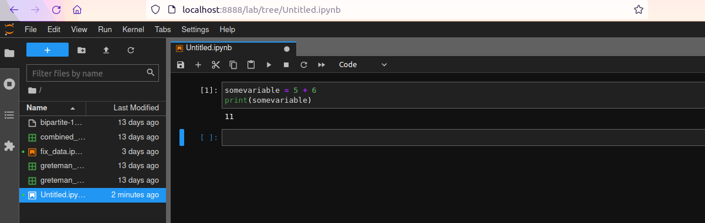

9 Data Wrangling with Python & Pandas
CIS 241, Dr. Ladd
10 Key Resources
- Python for Data Analysis by Wes McKinney
- Elements of Data Science by Allen B. Downey
- Intro to Cultural Analytics & Python by Melanie Walsh
- Pandas official documentation
These slides don’t contain everything you will need to know! Make sure to refer to the links above as well as the Pandas cheatsheet.
11 What’s the Difference Between Python, Pandas, and Jupyter?
11.1 Python is a programming language.
It’s the code you write.
somevariable = 5 + 6
11.2 Pandas is a library.
Libraries store reusable functions and methods. They need to be imported at the top of your code.
11.3 Jupyter is a program, an “integrated development environment” (IDE).
You can write Python in different places, but in this class we will write and run Python inside JupyterHub.

11.4 JupyterHub lets you store and access .ipynb files.
Files are organized in a hierarchy of directories, just like on your computer.
12 The Basics
Python and Pandas both have syntax, the way that you code. But the syntax for each is a little different!
12.1 Variables store information
# In Python, anything can be stored in a variable
myvar = 5
myvar #or print(myvar)
# In Pandas, whole spreadsheets can be "read"
# and then stored in a variable
cars = pd.read_csv('https://raw.githubusercontent.com/mwaskom/seaborn-data/master/taxis.csv')
carsData in Pandas can be loaded from a filename or a URL.
Use descriptive variable names, and avoid spaces!
12.2 You Try It!
- Create a variable called
newVarthat is equal to the value of five plus seven. Then display your variable to see what its value is. - Create a variable called
penguinsto hold the data available athttps://jrladd.com/CIS241/data/penguins.csv. Then display the DataFrame in Jupyter.
12.3 Add frequent comments to explain what your code does.
Comments in Python begin with a # symbol.
# This variable contains a continuous value
some_variable = 2.5You should also use comments for citations!
12.4 Variables have types, and so do Pandas columns.
- String or Character: a piece of text (ex.
"five") - Integer: a discrete numerical value (ex.
5) - Float or Double: a continuous numerical value (ex.
5.0)
12.5 You Try It!
- Find the type of
newVar, that you created in the last exercise. - Find all the data types in the penguins dataframe.
13 Manipulating Data
13.1 Individual data types (strings, floats, integers) can be put into container data types (lists, dictionaries, series, dataframe).
13.2 A Python list and a Pandas Series contain an ordered collection of items.
# A list is surrounded by brackets and can contain any kind of data.
mylist = [5,6,7]
secondlist = ["cat","dog","fish"]
# Access items in a list
mylist[0]
secondlist[1]
# A Series is the Pandas version of a list and works the same way.
# Every column of a DataFrame is its own Series.
myseries = pd.Series(mylist)
myseries[0]13.3 A Python dictionary and a Pandas DataFrame contain key/value pairs.
mydictionary = {"pet_name": "Fido", "age": 5, "pet_type": "dog"}
# Access items in a dictionary
mydictionary["pet_name"]
mydictionary["age"]
# Every DataFrame is made up of multiple Series columns
# You access these like keys in a dictionary.
taxis["distance"] # Dictionary notation
taxis.distance # Dot notation
# Or get a whole set of columns in a new DataFrame
prices = taxis[['fare','tip','tolls','total']]
prices13.4 You Try It!
- Create a list of 7 items of different data types.
- Display the 4th item in the list.
- Display the 2nd through 5th items.
- Display the 3rd from last item.
- Display the 8th item in the species column of the penguins DataFrame.
13.5 Loops and Conditions let you manipulate stored data.
13.6 You can use the for operator to iterate through a list.
mylist = [5,6,7,8]
newlist = []
for item in mylist:
addone = item + 1
print(addone)
newlist.append(addone)
print(newlist)13.7 You can use if and else to set conditions.
13.8 Pandas combines loops and conditions by letting you filter rows based on a condition in brackets.
cheap_fares = taxis[taxis.total < 10]
cheap_faresRemember to save everything in variables
13.9 Row selection uses standard comparisons.
>greater than>=greater than or equal to<less than<=less than or equal to!=not equal==equal (note the double equals sign!)
13.10 You can also use logical operators to combine comparisons.
& “and”, | “or”, and ! “not”

13.11 Logical operators can also be combined.
extreme_fares = taxis[(taxis.total < 7) | (taxis.total > 50)]
extreme_fares13.12 You Try It!
- Use a filter condition to create a dataframe of all the penguins in the Adelie species.
- With a partner, do the following steps:
- Create a list of numbers from 1 to 100.
- Use a
forloop and a conditional statement to create a new list of only the even numbers. - Put these numbers into a new list using the
append()method.
14 Wrangling Data
14.1 Why not just edit the data in the spreadsheet?
14.2 A function is a command that runs based on some input or parameter.
Python has many built-in functions.
# Some functions give a number result
sum([5,6,7])
mylist = [5,6,7]
sum(mylist)
len(mylist)
# But functions can do anything!
type(mydictionary)Functions can do just about anything: calculate values, create graphs, transform data, etc.
14.3 You can create functions like you create variables.
def get_last_value(some_list):
return some_list[len(some_list) - 1]
get_last_value(mylist)14.4 Pandas uses both functions and methods.
14.5 The .sort_values() method lets you sort rows by value.
taxis.sort_values("distance", ascending=False)14.6 .rename() lets you rename columns.
taxis = taxis.rename(columns={"fare": "base_fare"})
taxisNotice we kept the same variable name here!
14.7 .assign() lets you add new columns based on existing ones.
taxis_new_column = taxis.assign(total_per_person = taxis.total/taxis.passengers)
taxis_new_column14.8 You try it!
Sort the penguins dataframe by flipper length, with the shortest flippers at the top.
15 Grouping and Summarizing
15.1 We use .groupby() with summary statistics to make summary tables.
Summary tables are new dataframes that summarize our original data.
This paradigm is known as split-apply-combine, and it’s key to data analysis.
15.2 You can use summary statistic methods to get values for a whole column.
taxis["tip"].mean() # Dictionary notation
taxis.tip.mean() # Dot notationStat functions to use: mean(), median(), min(), max(), std().
15.3 Groupby lets you group data, to get summaries for each group.
taxis.groupby(['dropoff_borough'])It doesn’t look like anything on its own!
15.4 Now we can put it all together!
# Use multiple methods to "chain" operations
taxis.groupby(["dropoff_borough"]).mean(numeric_only=True)15.5 You try it!
Create a summary table showing the average bill depth of penguins for each species.